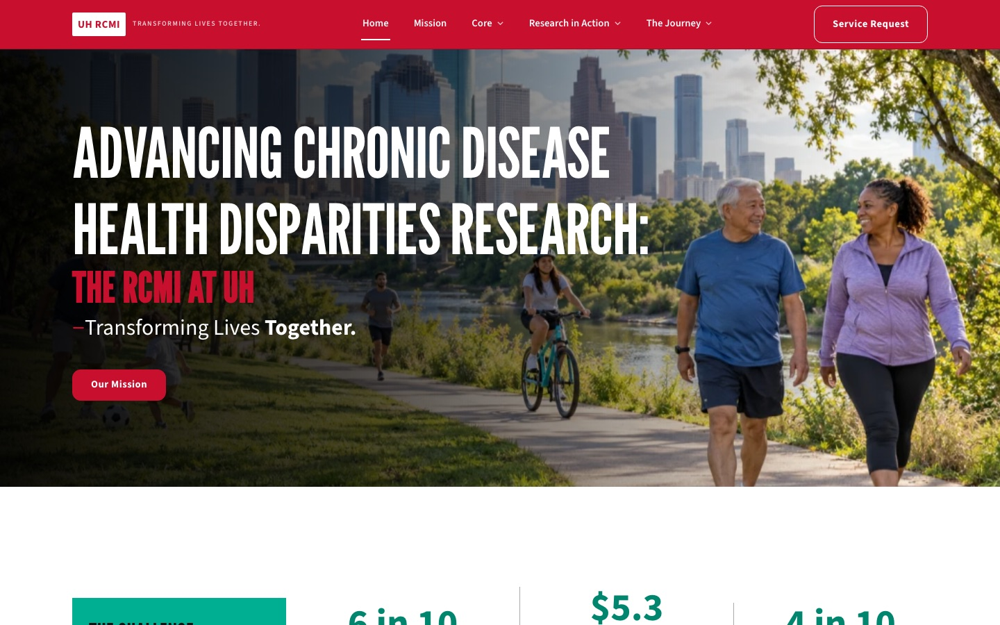

RCMI Program Website
The problem. The program needed a site its own staff could run — no developer required for every page change. And searching Google for “UH RCMI” used to bring up pages from the old Wix site across the first page, while Google Maps still pointed to it.
What I built. A custom block theme with a library of custom blocks, so editors assemble branded pages themselves: pick a section, drop in content, publish. For the search side: Google Search Console and sitemap, a server‑side redirect through Cloudflare when Wix offered only a JavaScript redirect, per‑page search titles and descriptions, and Maps and social profile updates.
The result. Editors can assemble branded pages themselves. In my searches for “UH RCMI”, the new site now appears and the old Wix pages no longer show up.
uhph.uh.edu/rcmi (opens in new tab) ↗
More about the work
The theme is built on WordPress block-theme architecture (theme.json, block patterns, template parts) with a companion plugin of custom blocks: staff directory with schema.org Person markup, feature cards, responsive data tables, parallax heroes, and tabbed content. The SEO layer adds per‑page search title and description fields, Open Graph and Twitter cards, JSON‑LD, canonical URLs, and sitemap handling.
